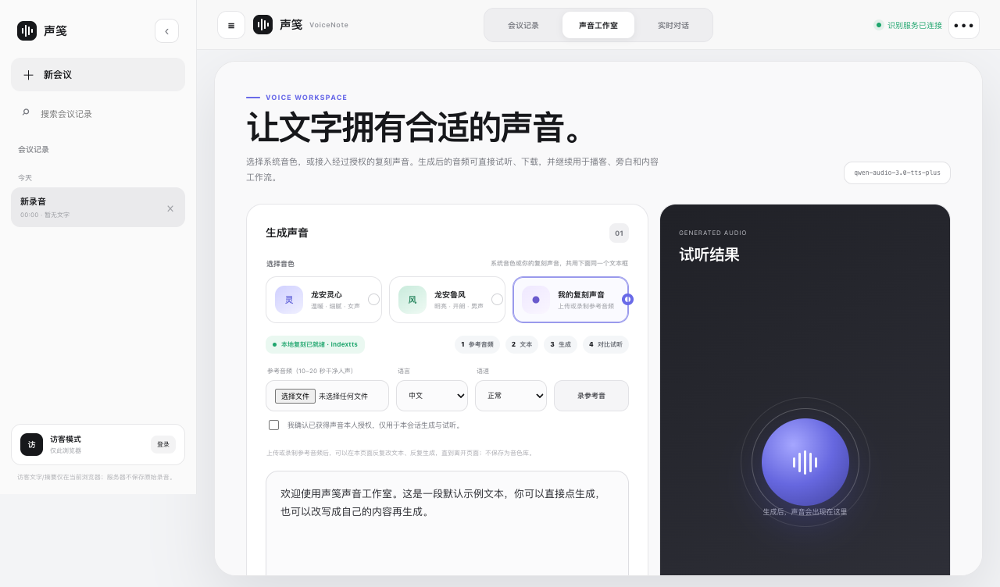

声音复刻使用指南¶
本页描述当前 Speakr / ChatVoice 声音工作室的 生成声音 统一面板：系统音色和 我的复刻声音 在同一个音色选择列表里勾选，共用同一个文本框，生成临时试听音频。
当前定位¶
- 这是一个一次性 voice cloning 流程：参考音频 + 新文本 -> 本次生成音频。
- 需要登录账号；访客模式不能生成复刻音频。
- 不保存 voice profile，不创建可复用 voice id。
- 不保存生成历史；结果只作为临时任务文件，用于当前页面试听/下载。
- 同一会话内，已上传的参考音频会保留，可以反复改文本、反复用同一把复刻声音生成，直到离开页面。
- 会议记录页仍不保存原始会议录音；声音复刻的参考音频和输出音频是独立的临时任务文件。
适用场景¶
你可以用它完成一个完整的 Voice Cloning 验收：
- 录一段自己的声音或上传一段授权参考音频；
- 在同一个音色列表里勾选 我的复刻声音；
- 输入希望这个声音重新说出的新文本；
- 点击 用复刻声音生成；
- 等待进度条显示生成状态；
- 在试听结果里播放生成音频，并和参考音频做听感对比；
- 不改参考音频，再换一段文本生成第二次，验证同一会话内可以复用复刻声音；
- 如需带走当前结果，点击下载生成音频。
网页端使用步骤¶
- 打开 Speakr 公网页面。
https://speakr.public.wzhecnu.cn/
- 选择 登录账号 并登录受邀账号。
声音复刻会上传参考音频到本地 VoiceClone sidecar 生成临时任务，因此必须使用账号会话。访客模式下点击生成会提示先登录。
-
进入顶部 声音工作室。
-
在 选择音色 里勾选一个声音卡片：
-
龙安灵心 / 龙安鲁风：系统内置音色，做普通 TTS；
- 我的复刻声音：使用你自己上传或录制的参考音频做本地复刻，卡片会显示当前参考音频状态。
所有声音卡片在同一个列表里，共用下面同一个文本框。如果服务器没有配置模型 Key，页面会提示 系统音色未配置模型 Key…暂不可用 且系统音色生成按钮禁用；这不影响 我的复刻声音。
-
如果选择 我的复刻声音，在复刻区域准备参考音频：
-
点击 参考音频（10–20 秒干净人声） 上传 WAV/MP3/WebM 等浏览器可选音频文件；或
- 点击 录参考音，授权麦克风后录制 10–20 秒。
推荐参考音频：单人、干净、无背景音乐、无混响，10–20 秒即可。
- 选择语言和语速。
当前常用验收路径为：语言 中文，语速 正常。
- 勾选授权确认。
必须确认已获得声音本人授权，仅用于本会话生成与试听。未勾选时点击生成会提示授权缺失。
- 在共享文本框里输入希望这个声音说出的新文本。
文本框默认已经预填一段示例文本，可以直接点生成调试，也可以改成自己的内容。这里不是参考音频的转写内容，而是希望复刻声音重新说出的目标文本。建议先用 1–3 句中文短文本验收，再尝试更长文案。
- 点击 用复刻声音生成。
页面会显示进度条：
提交中：ChatVoice 正在把文本和参考音频发给本地 sidecar；generating · 预计 ...s：IndexTTS-2.5 正在生成；-
生成完成：音频已返回页面。 -
在 试听结果 区域播放或下载。
生成成功后，结果区会显示：
- 音频播放器；
VoiceClone · indextts；- 文件大小；
- 下载生成音频 按钮。
-
（可选）复用复刻声音：保持来源仍是 我的复刻声音，把文本框内容改成新文本，再次点击生成。参考音频不用重新上传。
验收标准¶
一次完整验收应同时满足：
- 登录账号后可以进入 声音工作室；
/api/voice-clone/status返回configured=true、status=ready、engine=indextts；- 统一面板的 选择音色 列表同时包含系统音色（龙安灵心 / 龙安鲁风）和 我的复刻声音，三张卡片可勾选切换，共用同一个文本框；
- 参考音频上传后复刻卡片状态显示文件名，且标注本会话可复用；
- 系统音色未配置模型 Key 时显示提示并禁用生成按钮，
/api/tts返回 503 而不是 500； - 未满足登录/参考音频/授权/文本任一前置条件时，点击生成有明确提示，不是无响应；
- 点击生成后出现进度条，能看到
生成中…或generating状态； - 生成完成后 试听结果 出现播放器；
- 切到系统音色再切回 我的复刻声音，参考音频不丢失；换文本再点生成可以再次生成（复刻声音本会话内可复用）；
- 播放器可以播放，下载按钮存在；
- 浏览器 console 没有 JS error。
已完成的 hitk 公网验收¶
2026-08-22 在公网页面完成过多轮端到端验收。
第一轮（拆分卡片版）：
- 页面：https://speakr.public.wzhecnu.cn/?preview=voiceclone-acceptance-guide
- 登录：临时验收账号，验收后删除。
- 参考音频：
voice_01-reference.wav，约 467 KB。 - 目标文本：一段中文新文本，用于让参考声音重新说出。
- 进度状态：页面显示
generating · 预计 45s，进度条约 45%。 - 生成结果：
VoiceClone · indextts，约 1.5 MB，约 35.5 秒。 - 播放验证：点击播放器后
paused=false、readyState=4。 - Console：无 JS error。
第二轮（统一面板 radio 版）：
- 页面：https://speakr.public.wzhecnu.cn/?preview=voiceclone-unified-panel
- 登录：临时验收账号，验收后删除。
- 统一面板结构确认：选择声音来源 = 系统音色 / 我的复刻声音，共用同一文本框；
- 系统音色状态：显示 未配置模型 Key，暂不可用，生成按钮禁用，
/api/tts返回 503（不再 500）； - 切换 我的复刻声音 后复刻区域出现，按钮变 用复刻声音生成 →；
- 上传
unified-reference.wav（约 467 KB），来源状态显示 已选：unified-reference.wav（本会话可复用）； - 输入文本 → 勾授权 → 点击生成 → 完成；
- 不改参考音频、换新文本再次生成，第二次结果约 390 KB，来源状态仍为可复用；
- 播放验证：
readyState=4，可正常播放； - Console：无 JS error。
第三轮（合并音色选择版）：
- 页面：https://speakr.public.wzhecnu.cn/?preview=voiceclone-merged-selector
- 登录：临时验收账号，验收后删除。
- 选择音色 是同一个卡片列表：龙安灵心 / 龙安鲁风 / 我的复刻声音，三张卡片在同一处勾选切换，共用同一文本框；
- 点击 我的复刻声音 卡片后复刻区域展开，按钮变 用复刻声音生成 →；
- 上传
merged-reference.wav（约 467 KB），复刻卡片显示 已选：merged-reference.wav（本会话可复用）； - 输入文本 → 勾授权 → 点击生成 → 完成（约 390 KB）；
- 切到龙安灵心再切回 我的复刻声音，参考音频不丢失；换文本再次生成成功（约 389 KB）；
- 播放验证：
readyState=4，可正常播放； - Console：无 JS error。
第四轮（0.1.10 当前）：
- 页面：https://speakr.public.wzhecnu.cn/?verify=0110-final-layout
- 服务端配置统一读取 ChatEnv
ChatVoiceactive profile；模型 key 为 Token Plansk-sp...，状态只显示布尔值，不显示 key。 - 系统音色状态显示 系统音色已接入 Token Plan（sk-sp），可直接生成；
/api/tts真实生成 MP3（本次验收约 42 KB，HTTP 200）。 CHATVOICE_OPENAI_API_MODEL=deepseek-v4-pro-0813已由 ChatEnv profile 读入，会议标题/纪要模型默认跟随该值。- 录参考音 按钮不再被右侧 试听结果 面板遮挡；浏览器命中检测显示按钮中心命中
#record-clone-reference，页面横向溢出为 0。

截图留档：
- 上传参考音频后：
browser_screenshot_ede123acad43401baa28f83821754fce.png - 生成中进度条：
browser_screenshot_d0c0c00a1cf0463d81a73f11733b8e52.png - 生成完成并播放：
browser_screenshot_af2a981d4c0e464a9d7cd4cbabbd8456.png - 统一面板（系统音色未配置 Key 禁用态）：
browser_screenshot_be3bc2ca0d86423e85333f69ad88e3e0.png - 统一面板（复刻生成完成）：
browser_screenshot_db08c29bcba8485a9f9ffeaf0c07c2d2.png - 合并音色选择（复刻完成，gateway 缓存）：
browser_screenshot_b652998a155a45509c72b4d0811acf5b.png - 默认开场文本 + 合并音色列表（开场态，访客视角，系统音色未配置 Key）：
browser_screenshot_4b8ebfb3dba94422925d8ab263f7f233.png - 复刻面板展开 + 默认文本（未登录点击生成提示“请先登录账号”）：
browser_screenshot_dc6a742f92e9461c893e8a90ad5c8be9.png - 0.1.10 录参考音布局修复 + Token Plan 已接入：
assets/voice-studio-record-button-layout-0.1.10.png
常见问题¶
点击生成没有反应怎么办？¶
当前版本已经修复旧版无响应问题。按钮会根据声音来源状态提示：
请先登录账号请先上传或录制参考音频请先确认已获得声音本人授权请先输入要生成的文字本地复刻服务尚未就绪系统音色未接入 Token Plan CHATVOICE_OPENAI_API_KEY（sk-sp...）
如果仍然无响应，打开浏览器 console；不应出现 clone-audio-url、clone-prefix 或 voice-cloning/create 相关错误。
为什么不是创建 voice id？¶
当前 MVP 是 one-shot voice cloning，不是 enrollment。系统不会保存 voice profile，也不会让用户管理 voice id。每次会话都需要参考音频和目标文本；同一会话内参考音频会保留以便反复生成。
系统音色和我的复刻声音有什么区别？¶
- 龙安灵心 / 龙安鲁风：系统内置音色，做普通 TTS，需要服务端 ChatEnv
ChatVoiceprofile 配置 Token Plan 的CHATVOICE_OPENAI_API_BASE/CHATVOICE_OPENAI_API_KEY/CHATVOICE_OPENAI_API_MODEL；其中CHATVOICE_OPENAI_API_KEY必须是sk-sp...，避免普通按量sk-...误扣费。 - 我的复刻声音：使用本次上传/录制的参考音频做本地 one-shot 复刻，不依赖云 TTS Key，只依赖 hitk 上的 VoiceClone sidecar。
两者在同一个 选择音色 列表里勾选切换。如果只验证 Voice Cloning，请勾选 我的复刻声音 并使用 用复刻声音生成。
运维检查¶
期望关键字段：
{
"configured": true,
"status": "ready",
"engine": "indextts",
"model_version": "2.5",
"device": "cuda:0",
"model_loaded": true
}
hitk 当前服务：